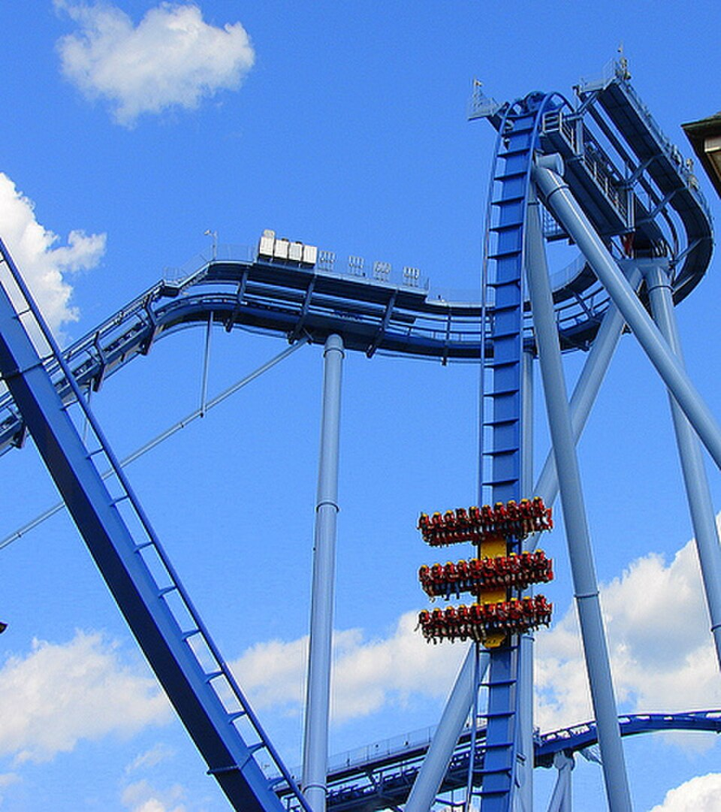
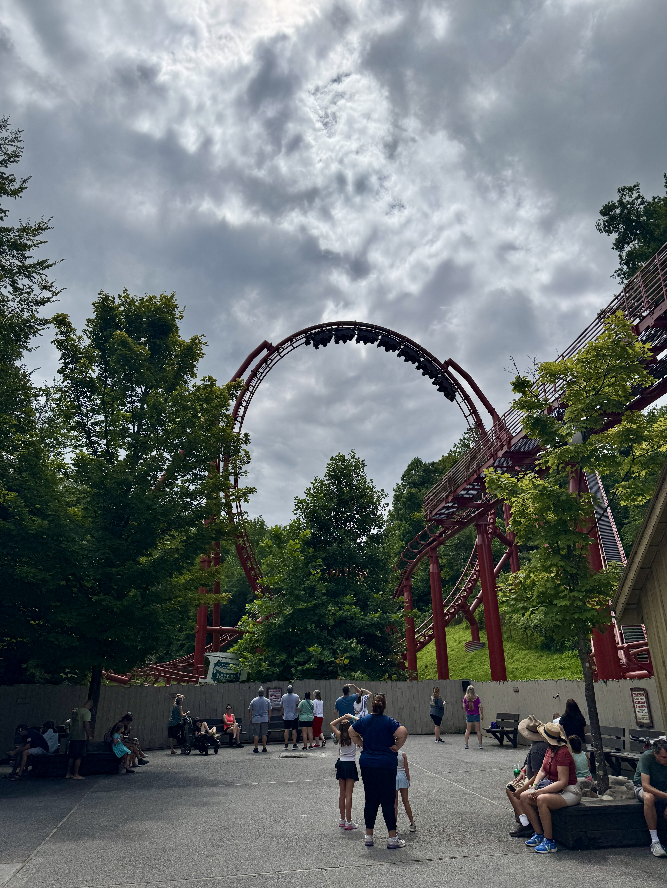
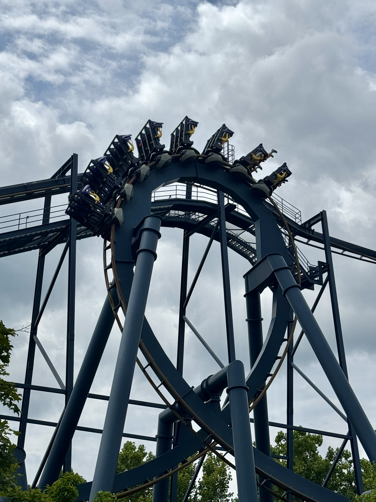
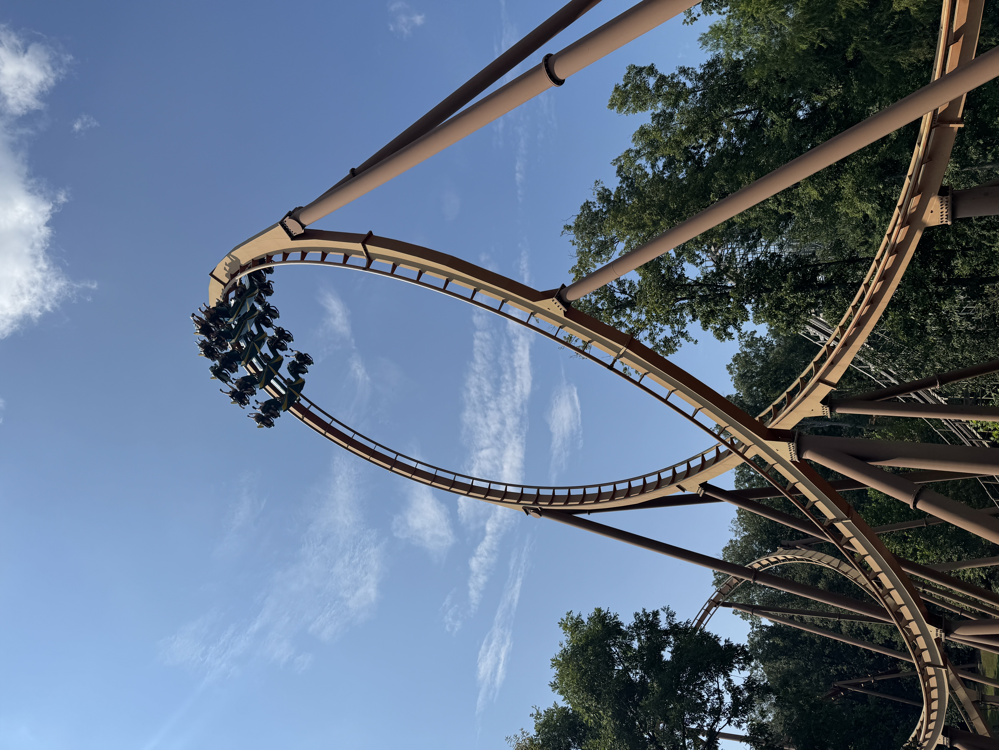
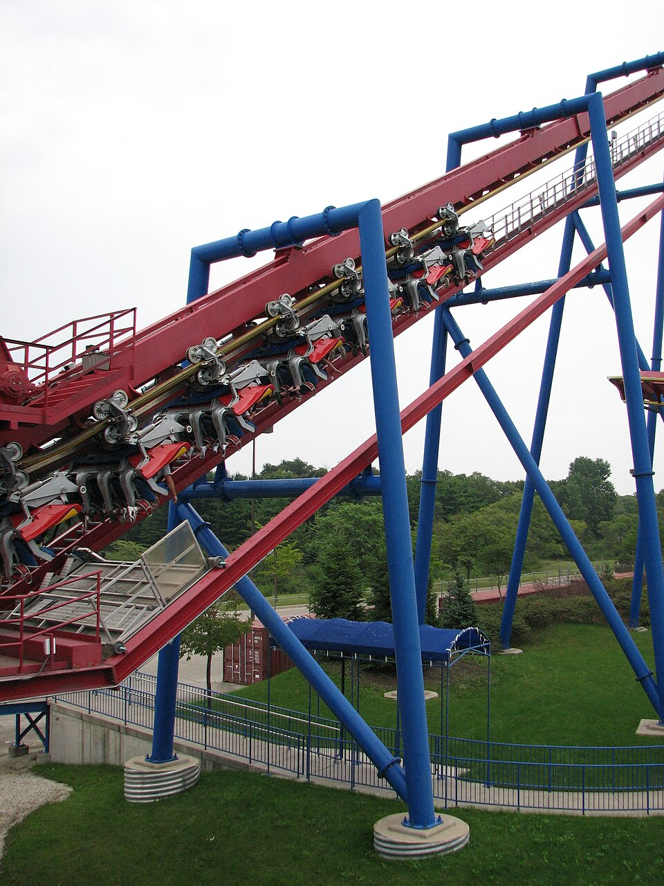
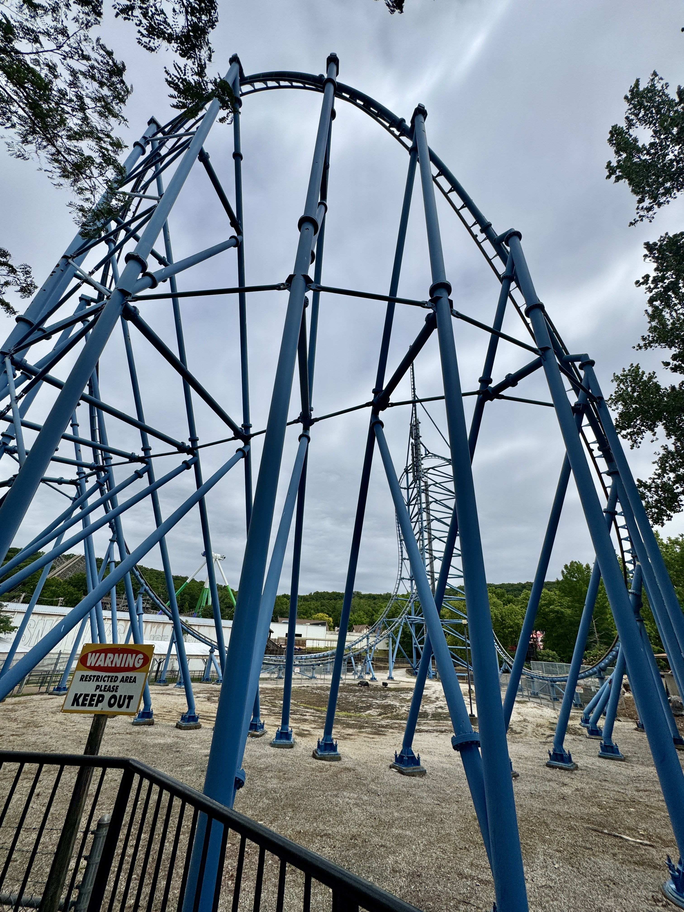

Vertical Drop
Vertical drop coasters feature steep drops at 90 degrees or more. Riders may pause briefly at the top before plunging down, making the first drop the main thrill of the ride.
A Beginner's Guide to Roller Coasters and Theme Parks

Vertical drop coasters feature steep drops at 90 degrees or more. Riders may pause briefly at the top before plunging down, making the first drop the main thrill of the ride.

Sit-down coasters are one of the most common roller coaster styles, with riders seated above the track in a traditional upright position. They can range from smaller beginner-friendly rides to larger coasters with steep drops, fast turns, and inversions.

Inverted coasters have seats suspended below the track, leaving riders' legs hanging freely. They often include fast turns, loops, and other inversions that create a more open and intense riding experience.

Wing coasters position riders on either side of the track with nothing directly above or below them. Their wide seating creates an open feeling and often makes near-misses, drops, and turns feel more dramatic

Flying coasters position riders facing toward the ground, creating the feeling of flying through the air. The unusual riding position can make drops, turns, and inversions feel very different from a traditional coaster.

Launch coasters usually start out with a very powerful launch using LIM or LSM motors. Some even have multiple launches throughout the ride creating for a thrilling experience.
Roller coasters can feel intimidating if you have never ridden one before, but knowing what to expect can make your first ride a little easier.
Most coasters include some combination of drops, turns, changes in speed, and forces that may push you into or lift you slightly out of your seat.
Some rides are much more intense than others, so starting with a smaller coaster can help you get comfortable before trying something bigger.
Always check the ride information and restrictions before getting in line, and remember that it is completely okay to skip a ride if you are not comfortable with it.